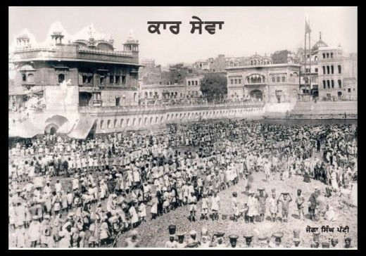

‘Kar Sewa’ refers to selfless service performed with humility, devotion, and love for humanity. In Sikh tradition, Kar Sewa is not merely voluntary work — it is a spiritual discipline rooted in Guru Nanak Sahib Ji’s principle of “Vand Chhako, Kirat Karo, Naam Japo.” Through Kar Sewa, Sikhs cultivate virtue, remove ego, and align their lives with the Guru’s teachings. The essence of Kar Sewa lies in complete surrender, doing service without personal gain, pride, or recognition.
Historically, Kar Sewa has played a crucial role in the construction, preservation, and renovation of Gurdwaras, sarovars, educational institutions, hospitals, community kitchens, and humanitarian projects. From desilting sarovars to building new institutions, countless volunteers have devoted their lives to uplifting society. Their work spans decades and has transformed the physical and spiritual landscape of Sikh heritage.
The tradition gained further prominence through dedicated groups and leaders who committed their lives to service. Baba Gurmukh Singh Ji, Baba Sadhu Singh Ji, and later Baba Jagtar Singh Ji nurtured the tradition and expanded its scale. Through their leadership, Kar Sewa became an organized movement — mobilizing Sangat worldwide, undertaking large infrastructure projects, and preserving sacred sites with tremendous devotion.
Today, numerous Kar Sewa organizations continue this tradition with dedication, undertaking large-scale humanitarian, educational, environmental, and religious projects. Their efforts not only preserve Sikh heritage but also uplift communities across India and abroad.
Sant Baba Kashmir Singh Bhuriwale belongs to the respected lineage of Bhuriwale Samparda, known for their deep spirituality, discipline, and lifelong commitment to Seva. The organization operates from Dera Kar Sewa Nirmale Tapoban, Amritsar, and continues to carry forward the tradition of Nirmala saints who emphasize learning, humility, purity, and selfless service.
For decades, the Bhuriwale Kar Sewa Jatha has undertaken major projects such as constructing, restoring, and renovating Gurdwaras, developing Sarovars, promoting Gurmat education, and providing social support to communities. Their work includes large-scale building efforts, disaster relief, langar seva, and educational support for underprivileged children. The Jatha is also known for establishing institutions that focus on moral education and Sikh values.
Under the leadership of Sant Baba Kashmir Singh Ji and assisted by Baba Sukhwinder Singh Ji, the organization has expanded its reach, involving Sangat from across the globe. Their Seva projects carry a distinct emphasis on discipline, transparency, and unity within the Panth. The Jatha’s work has strengthened Sikh heritage and has been recognized for uplifting numerous rural communities.
Website: https://karsewabhuriwale.org/
Head Office: Dera Kar Sewa Nirmaale Tapoban, Tarn Taran Road, Amritsar – 143001
Jathedar Baba Kashmir Singh Ji: +9198156-80317
Baba Sukhwinder Singh Ji: +91-93560-11575, +91-98156-40073
Media Department: +91-82647-80317
Email: derakarsewabhuriwale@gmail.com, 01sukhwinder@gmail.com
Nishan-E-Sikhi, established under the guidance of Kar Sewa Khadur Sahib, is one of the most impactful Sikh institutions dedicated to education and empowerment. Founded with the vision of preparing Sikh and Punjabi youth for civil services and competitive examinations, the center provides high-quality coaching, guidance, and personality development programs for IAS, IPS, PCS, and other government careers.
The initiative was created to uplift rural students and give them access to top-tier training that was previously limited to metropolitan cities. Nishan-E-Sikhi combines academic discipline with Sikh moral values, ensuring that students maintain humility, dedication, and responsibility toward society. The center has produced many successful candidates who now serve the nation in various administrative roles.
Beyond competitive exams, the organization conducts educational seminars, motivational workshops, career counseling sessions, and leadership development programs. Kar Sewa Khadur Sahib also runs additional institutions focused on skill development, Sikh studies, and cultural preservation. Through these efforts, the organization continues to transform countless lives, reinforcing the Sikh principle of serving society through excellence.
Office contact: 97799-31244
Co-ordinator: Prof. Jagroop Singh (75893-47815)
Director: Dr. Kamaljit Singh (99140-06662)
Advisor: S. Karnail Singh IRS (Retd)
Kar Sewa Sri Hazoor Sahib is dedicated to preserving and developing one of the most sacred Takhts of the Sikh Panth — Takht Sachkhand Sri Hazoor Abchal Nagar Sahib, Nanded. This Kar Sewa Jatha has undertaken numerous restoration, beautification, and construction projects across Nanded, especially around the historic Nagina Ghat and surrounding Gurdwaras associated with Guru Gobind Singh Ji’s final years.
The organization plays a crucial role in maintaining the spiritual and historical sanctity of the region. Their seva includes building pathways, renovating Gurdwaras, constructing Sarovars, improving infrastructure for pilgrims, and preserving heritage sites connected to Sikh history. The Jatha works with deep devotion, understanding the unique significance of Hazoor Sahib as the place where Guru Gobind Singh Ji bestowed Guruship upon Sri Guru Granth Sahib Ji.
They also assist local communities through social welfare projects, including medical camps, food distribution, cleanliness drives, and support for pilgrims during large gatherings such as Hola Mohalla and Gurpurabs. Their dedicated efforts have strengthened the cultural and spiritual environment of Nanded.
Address: Nagina Ghat Road, Nanded, Maharashtra
Facebook: Click Here
Mobile: +91 98900 12202
WhatsApp: +91 98900 12201
The Nischey Kar Seva Foundation is a modern Sikh humanitarian organization dedicated to promoting service through education, empowerment, and social welfare. Guided by the principle of “Nischey Kar Apni Jeet Karo,” the foundation places strong emphasis on moral character, discipline, and helping those in need through practical initiatives.
The organization works in areas such as providing educational scholarships, supporting needy families, organizing blood donation camps, cleanliness campaigns, and promoting Sikh values among youth. Their programs focus on building self-confidence and creating opportunities for underprivileged communities through mentorship and guidance.
With a growing presence on social media, the foundation engages youth and Sangat worldwide, inspiring them to participate in meaningful Seva. Their projects, though grassroots in scale, have made a significant impact in local communities and continue to expand with the support of dedicated volunteers.
Facebook: Profile Link
Email: Nischeykarsevafoundation@gmail.com
The Kalgidhar Society, also known as The Kalgidhar Trust, is one of the largest Sikh humanitarian and educational organizations in the world. Established in 1956 and inspired by the vision of Sant Attar Singh Ji Mastuana Sahib and Sant Teja Singh Ji, the organization focuses on blending spirituality with modern education to uplift humanity.
The Society runs the world-renowned Akal Academies — over 130 CBSE-affiliated schools providing high-quality rural education to more than 70,000 students. These institutes emphasize academic excellence, character development, discipline, and building strong moral values rooted in Sikh teachings. Many of their schools are situated in remote and underserved areas, giving children access to quality education that would otherwise be unavailable.
Beyond schools, The Kalgidhar Society operates colleges, a university, drug de-addiction centers, orphan care programs, women's empowerment initiatives, disaster relief services, free medical camps, and agricultural support projects. Their work reflects the Sikh commitment to uplifting all humanity, regardless of caste, religion, or background.
Over the years, the organization has received global recognition for transforming rural India through education and social service. Their vision of creating a peaceful, drug-free, and progressive society continues to inspire millions.
Email: info@barusahib.org
Contact: +91 9871312313, +91 9811108329, +91 9711193846
WhatsApp: +91 9910432432